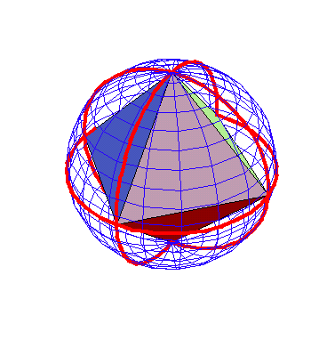
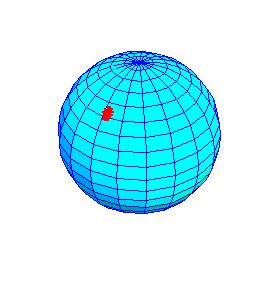
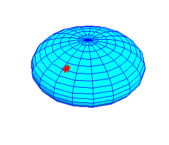
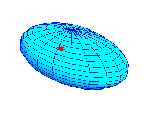
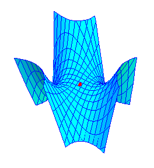
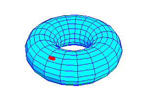

Riemann for Anti-Dummies Part 45
THE MAKING OF A STRAIGHT LINE
Straight lines are not defined, they are made.
The above statement might seem jarring to one fed a steady diet of neo-Aristotelean dogma from their primary, secondary and university teachers, but it is the standpoint adopted by C.F. Gauss by the time he was 15 years old. In July 1797, at the age of 20, Gauss wrote in his notebook, "Plani possibiliatem demonstravi," (The Possibility of the Plane Proven). He later elaborated on this idea in a January 1829 letter to Bessel, where he spoke of his conviction, "for nearly 40 years," that "it were impossible to establish the foundations of geometry a priori." Gauss gives as an example, the Euclidean definition of a plane, as a "surface that lies evenly with the straight lines on itself" (Euc. I, def.7.) "This definition," Gauss wrote, "contains more than is necessary to determine the surface, and involves tacitly a theorem which first must be proven."
An individual subjected to the aversive conditioning of today's information society education, might think Gauss was making some esoteric quibble, of interest only to the arcane curiosity of certain specialists. In fact, the epistemological issue Gauss is addressing, is exactly the one that is the cause of much of today's mass psychosis, upon whose successful treatment the future of civilization depends.
To grasp the point, consider the following illustration, along with Euclid's concomitant definition of a line as "breadthless length" (Euc. I,def. 2.) and a "straight line" as, "a line that lies evenly with the points on itself." (Euc I, def. 4.) Imagine an octahedron, or some other solid, and think of the line connecting two of its vertices. Under Euclid's definition, this line would be straight, as it lies evenly with the vertices, and the face of the solid would be a plane because it lies evenly with the lines that form its edges. But, from the standpoint of construction, the solid is generated from a sphere. Those same vertices also lie evenly with great circle arcs along the surface of the sphere, which themselves lie evenly with the spherical surface. (See Figure of inscribed octahedron.) How can one distinguish which of the two surfaces, spherical or planar, and which set of lines, circular or linear, are the "straight" ones, by Euclid's definition?
Inscribed Octahedron  |
Euclid's definition applies equally to both types of lines and surfaces, as well as to an infinite number of other possible surfaces and lines that could conceivably lie even with the vertices of a solid. A definition alone is insufficient to distinguish one from the other, because, as Gauss says, the definition assumes a theorem concerning the physical characteristics of the surface and the lines contained in it. Such characteristics must be proven, or, in the domain of physical action, measured, by what Riemann called a "unique experiment." In the tradition of Leibniz, Gauss called these characteristics, "curvature." The difficulty today's victims of information education have in grasping Gauss' point, is that they've become accustomed to thinking of "straight" and "flat" in a certain pre-defined way, which, in the minds of the victim, carry the authority of "Roman law." As long as this "rule of law" holds its sway over the victim's mind, the afflicted person will cringe at the thought that the physical universe might disobey this defined law of straightness. But, whatever the authority with which this rule of law is pronounced, the universe decides what is straight as a matter of principle. This produces a psychological crisis that intensifies as long as the victim cowers under the arbitrary dictate of definitional straightness.
A baby and a drunk both walk a crooked path. The baby because it's trying to discover the multiply-connected principles of physics, biology and cognition that determine its intended path. The drunk because, his damaged state prevents him from recognizing the principles he once knew, and he responds to whatever definition of straightness his inebriated impulses conjure up. The baby's frustration, when it falls upon reaching the limit of each temporary hypothesis, is transformed into joy, when the discovery of the missing principle increases its power to proceed on its way. The stumbling frustration of the drunk, oligarch, lackey, or victim of Straussian brainwashing, stews into bi-polar rage at his loss of control, screaming, like Shelley's Ozymandias, "Look upon my works ye mighty and despair...."
As long as one's mental powers are impaired by arbitrary definitions whose only force is the arbitrary authority with which they're uttered, one remains in a stupor, either intoxicated with the power to wield such authority, or, the depression brought on by submitting to it. To free the victim and restore those inherently human powers he or she once experienced, the sobering balm of classical art and science must be applied. Hence, the importance of pedagogical exercises.
The Determination of Curvature
While Gauss' youthful insight was at odds with such contemporary authorities as Leonard Euler and his protege, I. Kant, who insisted that the principles of geometry could only be given by a priori definitions, its roots were quite ancient. Euclid's "axiomization" of geometry was itself at odds with the very process by which the geometrical principles contained in it were discovered. As the solutions of Archytas and Meneachmus for the problem of doubling of the cube, and more generally, the construction and uniqueness of the five Platonic solids from spherical action indicate, the relationships of rectilinear geometry are derived from non- rectilinear physical action. The investigations into this type of physical action are further exemplified by the works of Apollonius, Archimedes and Eratosthenes, as well as the Pythagoreans' demonstration that the relationships among musical tones are generated by a higher principle than the linear divisions of a string.
It was this "anti-Euclidean" approach that was adopted by Cusa, Kepler, Fermat, and Leibniz, who replaced the sophistry of an arbitrary definition of a straight line, with the idea of least-action pathway, or what later became known as a "geodesic." The geodesic is the straightest and shortest line, whose nature is determined by the physical properties of the surface, or, from Riemann's more general standpoint, the "n-dimensional manifold" or phase-space, in which it occurs.
For example, Kepler's planetary orbit is the least-action pathway created by the harmonic principles of the solar system, the which "define" the elliptical orbit as its "straight line." Similarly the principles of reflection of light "define" the shortest distance as its "straight line" while the principles of refraction "define" shortest time as straightness. The introduction of the principle of the changing velocity of light under refraction, "re-defines" the straight line, from the path of shortest-distance to the path of least-time. Or, conversely, the change in what is straight, indicates the presence of a new principle.
In each case, the definition of a straight-line is not given by some arbitrary authority, but by a set of measurable physical principles. The question for science, politics, economics and history, is how to determine those governing physical principles, from what amount to small pieces of the "straight" lines determined by them. This entails being able to discover the principles from the "curvature" of the line, and to discover new principles by measuring changes in that characteristic curvature.
Exemplary is Leibniz' and Bernoulli's determination of the curvature of the hanging chain. Unlike Galileo, both Leibniz and Bernoulli recognized that the chain's curvature was determined by a physical principle. This principle does not exist in an empty, infinitely-extended Euclidean-type plane, but is produced in a physical manifold with a characteristic curvature. This manifold is bounded by physically-determined extremes, expressed by the relationship of the lowest point of the chain to the hanging points. If the hanging points coincide, there is no tension, and the chain has no curvature. If the hanging points are pulled apart, at some point the chain will break. At these extreme conditions of maximum and minimum tension, there is no curvature, and no stable "orbit" for the chain. The common-sense notion of straight, that is not-curved, only exists outside the physical manifold in which the chain hangs. In that manifold the catenary curve is the only possible "straight" line. Thus, "straightness" for the chain, is a curve--a curve determined by a measurable physical characteristics. At every small interval along the chain, the links steer a course which is constantly changing, but changing according to a measurable principle. As developed in previous installments, Leibniz and Bernoullli demonstrated that this characteristic changed according to a principle that Leibniz called, "logarithmic."
A similar relevant case is Gauss' earth-shaking determination of the orbit of the asteroid Ceres, from that infinitesimal portion of its orbit represented by Piazzi's observations. All the established scientific authorities were stymied in their efforts to find Ceres' orbit, hampered by their insistence that Ceres' orbit was moving in an empty box and its orbit was a deviation from the definition of straight-line action that Galileo and Newton had re-imposed on physics, after Kepler's liberation of science from such Aristoteleanism. Gauss, as a student of Kaestner, was guided by the knowledge that Ceres was following a least-action pathway in a solar system governed by the harmonic physical principles that Kepler described, and that those harmonic principles indicated a discontinuity in the region between Mars and Jupiter. Unlike his competitors, Gauss knew that the Galilean/Newtonian straight line did not exist in the physical manifold in which Ceres and the Earth were moving. So, while everyone else was looking for a path among an infinite number of possible pathways, in a manifold that did not exist, Gauss was looking for the unique least-action pathway that Kepler's solar system would produce. His successful approach was focused on determining how those principles would be expressed in the small portion of the orbit that Piazzi had observed. (See "How Gauss Determined the Orbit of Ceres," Summer 1998 Fidelio.)
A crucial distinction occurs when one compares the case of the catenary with the case of the Ceres orbit. The discovery of the catenary principle required the determination of a single pathway. The discovery of Ceres' orbit involved the relationship between two different pathways, Ceres' and Earth's as these pathways were viewed as projections on the inside of the celestial sphere. These two pathways, though different, are both least-action, i.e. "straight," paths within Kepler's solar system. Thus, the solar system produces "straight-lines" of different curvatures in different parts.
Gauss found a similar situation in his geodetic measurements, where he measured a variation in the direction of the pull of gravity from place to place on the Earth. As Gauss moved north, the angle of inclination of the north star increased, but non-uniformly with the distance traveled along the Earth's surface. But, Gauss also determined that the direction of the pull of gravity varied as he moved east to eest or some other intermediate direction. The question for Gauss was how to determine the shape of the Earth, from these variations along small parts of its surface? Or, in other words, how is the overall curvature of the Earth, and its local variations, reflected in every small part of its surface, in the same way that the physical principle of the catenary is reflected in every small part of the chain?
The Making of Curvature
These types of considerations gave raise to Gauss' theory of curved surfaces. As illustrated in the previous installment, Gauss measured the "total" or, "integral" curvature of a surface by mapping the changes in direction of the normals onto an auxiliary sphere. Following the direction of Leibniz' infinitesimal calculus, Gauss showed how this overall curvature was related to the curvature at every infinitesimal surface element:
"The comparison of the areas of two corresponding parts of the curved surface and of the sphere leads now (in the same manner as e.g. from the comparison of volume and mass springs the idea of density) to a new idea. The author designates as "measure of curvature" at a point of the curved surface the value of the fraction whose denominator is the area of the infinitely small part of the curved surface at this point and whose numerator is the area of the corresponding part of the surface of the auxiliary sphere, or, the integral curvature of that element. It is clear that, according to the idea of the author, integral curvature and measure of curvature in the case of curved surfaces are analogous to what, in the case of curved lines, are called respectively amplitude and curvature simply. He hestates to apply to curved surfaces the latter expressions, which have been accepted more from custom than on account of fitness. Moreover, less depends upon the choice of words than upon this, that their introduction shall be justified by pregnant theorems."
Gauss goes on to develop the methods by which to measure what has now become known as "Gaussian curvature." If, following the tradition of Euler, the surface is considered as the boundary of a three-dimensional solid object, then this curvature could be measured by cutting the surface at the point by two planes, normal to the surface and perpendicular to each other. The curves formed by the intersection of these planes with the object express the curves of minimum and maximum curvature at that point.
To illustrate this, cut an egg, apple, or some other curved solid in half. Then cut a similar shaped object in half at a 90 degree angle to the first cut. Compare the curves formed by these cuts. Cut another similarly shaped object at another angle. Compare the curvature of the three types of curves.
This method is totally useless for a real physical problem such as measuring the surface of the Earth, for it is obviously impossible to make orthogonal cuts in the Earth at every point and measure the curvature of the resulting curves.
To solve this problem, Gauss conceived of a curved surface as a two-dimensional object. Thought of in this way, the curvature could be determined by measuring the behavior of the "shortest" lines, i.e. geodesics, emanating from that point.
For example, the surface of a sphere can be entirely determined by a system of two sets of orthogonal circles, akin to "lines" of longitude and latitude, the former being "geodesics" and the latter not. In a sphereoid, the lines of latitude remain circular, while the longitudinal ones become elliptical. In an ellipsoid, both sets of curves are elliptical. Other examples are a psuedosphere, where the one set of curves are circles and the other tractrices, or, the catneoid, where the curves are circles and catnaries. For more irregular surfaces, the curves are irregular, but such an orthogonal system can always be developed.
From this standpoint, the common-sense notion of a "flat" Euclidean plane is just a special type of surface, with no particular, a priori, "legal" authority. The common sense notion of "straight" line becomes simply the "geodesic," characteristic of this type of surface.
Gauss showed that the behavior of the shortest lines emanating from any point on a surface could be measured with respect to these systems of orthogonal curves by extending the method of Leibniz' infinitesimal calculus. And, more importantly for physical science, the nature of these orthogonal curves, and consequently the curvature of the surface, could become known by the measured changes in these geodesic lines.
In the next installment we will delve into Gauss' method more directly. For now, we supply an intuitive introduction through the accompanying animations. Here you can compare the behavior of geodesic lines emanating from a point on different surfaces, namely: a sphere, spheroid, ellipsoid, monkeysaddle, and torus.
Sphere  |
Sphereoid  |
Ellipsoid  |
Monkeysaddle  |
Torus  |
Notice the relationship between the behavior of these lines and the system of orthogonal curves drawn on the surface. Notice how the shape of these geodesics depends only on the nature of the surface and their direction. Also, compare the behavior of these geodesics with the integral curvature of these surfaces illustrated in the Gauss mappings that accompanied Riemann for Anti-Dummies Part 44.
The first step is to develop the power to measure the physical characteristics of the surface from the "straight" lines that surface produces. But humans possess a greater power--to discover and apply new principles, thus changing the curvature, and making "straight" lines.
{kind=link}
{kind=link}
{kind=link}
{kind=link}
{kind=link}
{kind=link}